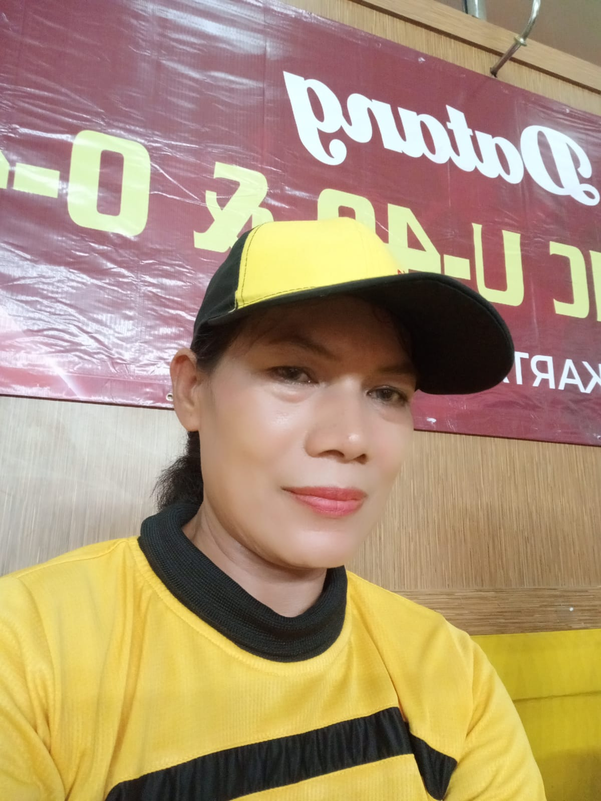

Resiyah
Alamat: Kelapa Dua, Kebon Jeruk, Jakarta Barat
No Telp: +62 896-3739-3719
T/TL: Purwokerto / 5 February 1971
Pengalaman Menjadi Juri
- Menjadi juri dalam acara bergengsi Festival Olahraga Rakyat 2024 sebanyak 2 kali.
- Memiliki pengetahuan mendalam mengenai tolak ukur penjurian serentak dan beregu, memastikan keadilan dan objektivitas dalam setiap kompetisi.
Sertifikat
-
Yayasan Jantung Indonesia - Pendidikan Pelatihan Klub Jantung Sehat

-
Yayasan Jantung Indonesia - Pendidikan Pelatihan Dasar Klub Jantung Sehat

Senam yang Dikuasai
- Senam Baku (gerakanya mirip dengan Senam Pekerja)
- Senam Jantung Seri 1 sampai 6
- Senam Ayo Bersatu
- Senam Pramuka
- Senam PGRI
- Senam Aerobik Dasar
- Senam SKJ
- Senam Kicir Kicir
- Senam Poco Poco
- Senam Kreasi
- Senam Line Dance
Aktivitas Senam
- Aktif berpartisipasi dalam senam rutin sejak tahun 2004 hingga sekarang, menunjukkan dedikasi dan komitmen yang kuat terhadap kesehatan dan kebugaran.
- Saat ini, rutin menjadi instruktur senam sebanyak 2 kali dalam seminggu, membimbing peserta dengan semangat dan keahlian.
- Mengajar di salah satu klub jantung sehat
- Mengajar di SMPN 89 Tj. Duren Utara, Kec. Grogol Petamburan, Kota Jakarta Barat
- Senam hampir setiap hari, menjaga tubuh tetap bugar dan siap menghadapi tantangan baru.
Pendidikan
SGO (Sekolah Guru Olahraga) 1988 - 1991